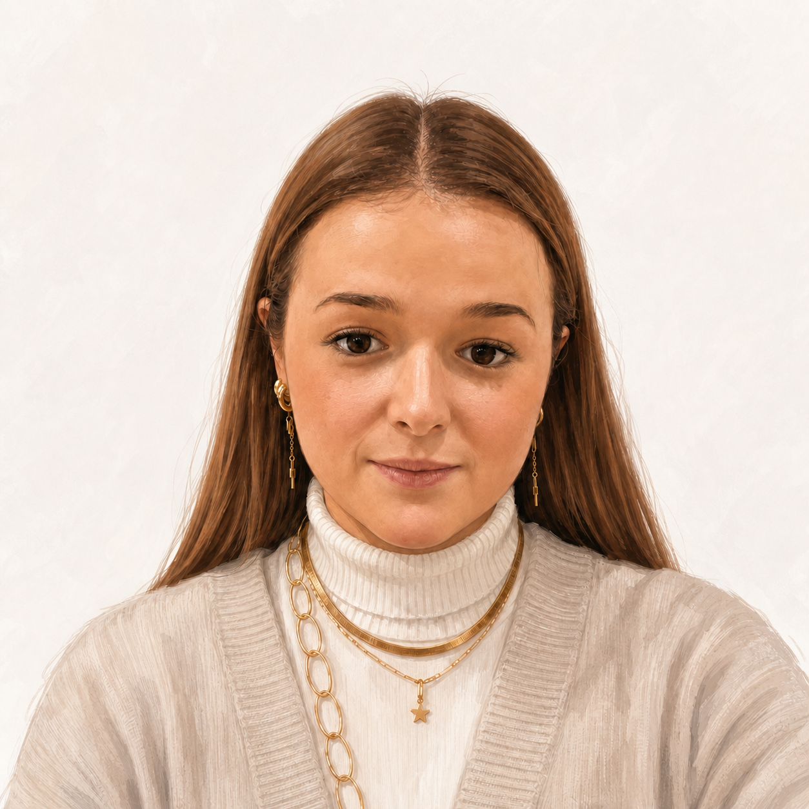

Ingeniera Informática
Especializada en infraestructura cloud con Microsoft Azure, automatización mediante Terraform e integración de soluciones de Inteligencia Artificial. Orientada a entornos cliente y resultados medibles.
Estudiante de Ingeniería Informática y consultora técnica con casi 5 años de experiencia en soluciones de tesorería y arquitectura cloud. Me muevo entre el mundo del desarrollo, la automatización y la IA, siempre con foco en aportar valor real al cliente.
Actualmente en Azurriga, con trato directo con clientes en implantaciones de TMS, además de trabajando con Azure, Terraform, Python y soluciones de IA.
Ingeniería Informática + Ciberseguridad y Hacking Ético
Universidad Francisco de Vitoria · Delegada académica
CFGS Desarrollo de Aplicaciones Multiplataforma
Centro de Estudios Superiores AFUERA, Madrid
Payment Expert
nov. 2025 – nov. 2028
Azurriga S.L. / KYBA
Deloitte España
Administración y despliegue de infraestructura en Microsoft Azure mediante Terraform (IaC), con automatización, parametrización de recursos y adaptación a entornos cliente.
Desarrollo de un chatbot basado en IA con arquitectura RAG (Retrieval-Augmented Generation) sobre Azure OpenAI, integrado con HubSpot para automatizar la resolución de consultas y mejorar el soporte al usuario.
Plataforma que conecta supermercados, organizaciones benéficas y granjas para gestionar la donación de alimentos próximos a caducar. Contribuye a los ODS de la ONU: Hambre Cero, Producción y Consumo Responsables y Fin de la Pobreza.
Proyecto premiado en el IV Concurso de Proyectos Transversales HCP/CE de la Universidad Francisco de Vitoria, orientado a la inclusión tecnológica equitativa.